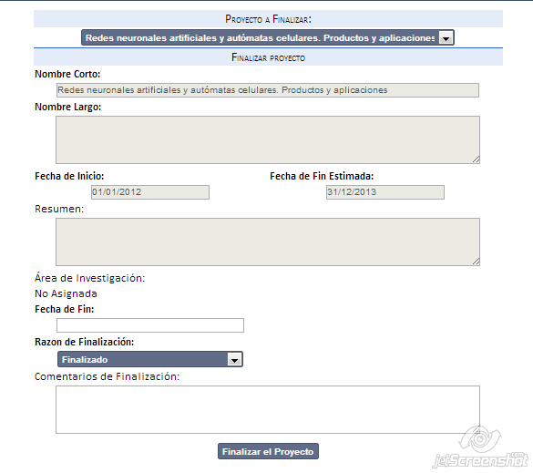

Finalización de proyecto
Puede finalizar ingresando desde el Menú principal -> Proyectos -> Finalizar proyecto o bien desde Menú principal -> Proyectos -> Administración de proyectos seleccionado directamente la opción de eliminación sobre el proyecto requerido.
Puede finalizar un proyecto por dos motivos:
Para ello se debe:

Created with the Personal Edition of HelpNDoc: Easily create iPhone documentation